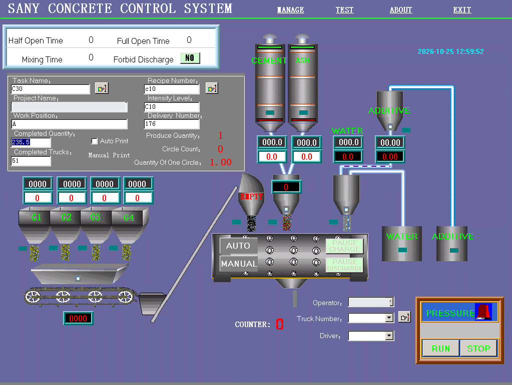
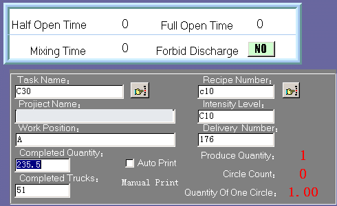
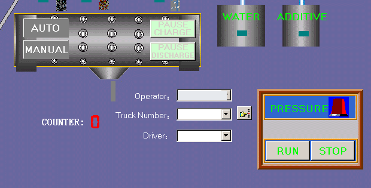
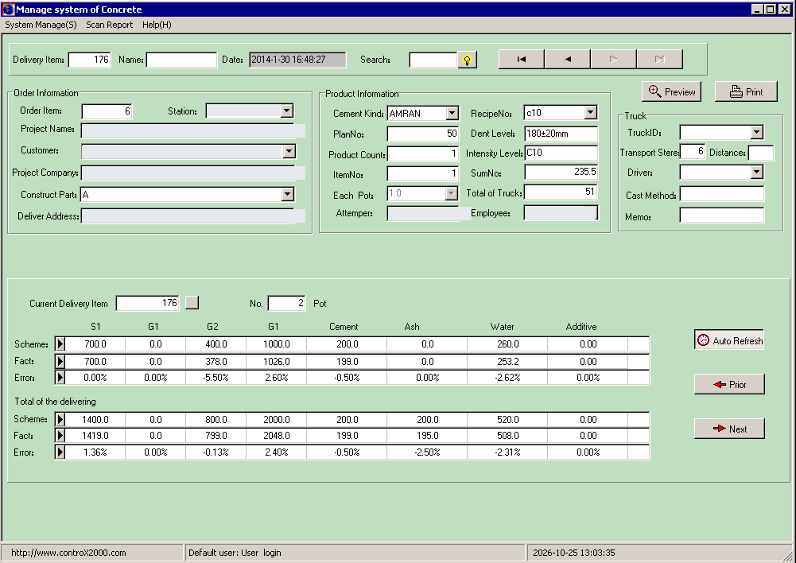
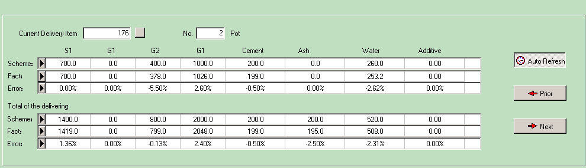
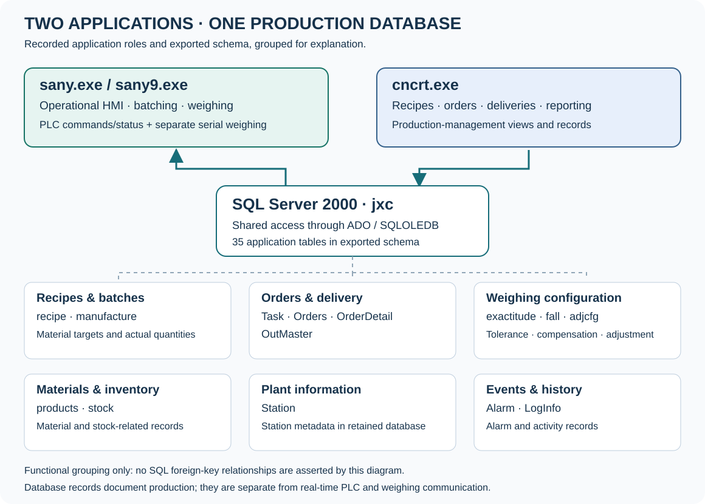

Industrial Automation · Concrete Batching · PLC
Industrial Automation & PLC-Based Control Systems
Concrete batching control integrating a PC-based SANY operator interface, Modbus RTU PLC communication, serial weighing and SQL Server production management.
Implemented Project
Project Overview
This industrial automation project covers the control and information layers of a central concrete batching plant: material handling, recipe-based dosing, weighing, mixing, discharge and production reporting. A single operator workstation connects the operational HMI, production-management application and shared SQL Server database.
The case study explains the relationship between operator commands, PLC status, weighing interfaces and production records. Original software screenshots support a detailed interface guide, while technical diagrams explain the control and data architecture.
- Scope
- Material handling, recipe-based batching, weighing, mixing, discharge and production reporting.
- Applications
- SANY process monitoring and operator control; CNCRT production administration; shared jxc SQL Server database.
- Integration
- Modbus RTU PLC communication and dedicated serial weighing interfaces, supported by original software screenshots and a documented engineering record.
System Architecture and Communication
SANY provides the process interface, CNCRT manages production context and reports, and the jxc database stores shared application records. PLC communication and serial weighing form separate operational paths from database access.
| Layer | Implementation |
|---|---|
| Operational HMI | sany.exe / sany9.exe — process visualization, batch parameters, automatic/manual operation and process commands. |
| Production management | cncrt.exe — recipes, tasks, orders, deliveries, material consumption, inventory and reports. |
| PLC interface | Modbus RTU on COM1; 38400 baud, 8E1, unit address 2, as recorded in the application configuration. |
| Weighing interfaces | Eight serial ports, COM3–COM10, configured for 19200 baud, 8N1. |
| Shared database | SQL Server 2000, database jxc, accessed through ADO/SQLOLEDB; 35 application tables in the exported schema. |
The archive runtime log identifies Siemens S7-200 and Mettler Toledo T600 device families. Exact CPU identification, physical channel assignments and the association between logged T600 devices and the configured ports are addressed in the engineering record.
Software Interface Guide
This guide explains the operational and production-management applications used in the concrete batching control environment. It combines original application screenshots, focused interface views, field-by-field explanations, worked reporting examples and a functional database diagram. Customer, site and operator identifiers are masked in the published screenshots.
1. SANY — Process Monitoring and Operator Control
The SANY CONCRETE CONTROL SYSTEM screen brings production context, material weighing, plant status and operator commands into one process display. Aggregate handling appears on the left; cement, ash, water and additive paths lead toward the mixer; operating controls and production counters occupy the lower area. The screenshot represents a historical interface state.

| Screen element | What it shows or controls |
|---|---|
| MANAGE / TEST / ABOUT / EXIT | Visible application menu entries; their complete actions are not shown in this screenshot. |
| Task Name / Recipe Number / Intensity Level | Production-task and recipe/strength-grade context. Recipe identifiers and strength-grade fields are distinct. |
| Project Name / Work Position / Delivery Number | Project/work location and delivery context; identifying project text is masked. |
| Completed Quantity / Completed Trucks | Stored production progress counters, not a measurement of present plant throughput. |
| Produce Quantity / Circle Count / Quantity Of One Circle | Job quantity and batching-cycle settings/status displayed by this application. Confirm units and scaling from its configuration. |
| G1–G4, belt and inclined conveyor | Four drawn aggregate bins and the conveying path in this software mimic. These are not a verified installed-bin schedule. |
| CEMENT / ASH / WATER / ADDITIVE | Powder, water and admixture paths and numeric displays. Their exact physical channel assignments remain unresolved. |
| Paired numeric readouts | Separate displays appear at material stations. Exact tags/scaling require the original communication and weighing configuration. |
| AUTO / MANUAL | Visible mode controls. The screenshot does not establish every permitted manual action or safety interlock. |
| PAUSE CHARGE / PAUSE DISCHARGE | Visible controls for pausing charging and discharge. |
| RUN / STOP | Operator run/stop commands shown in the HMI. A software STOP is not evidence of a safety-rated emergency stop. |
| PRESSURE alarm | Pressure-related alarm/indicator area. Alarm state and zero readings in the screenshot do not prove a running, connected plant. |
| COUNTER | Displayed batch/cycle counter area; its exact relation to other cycle fields requires the application configuration. |
| Operator / Truck Number / Driver | Production/operator context fields; personal names have been masked. |
2. SANY — Batch Parameters and Timing
The parameter area combines opening timers, mixing duration, discharge inhibition and production settings. The close-up below comes directly from the original interface. Timer units and the associated actuator sequence must be checked against the application configuration and PLC program.

| Setting | Engineering interpretation |
|---|---|
| Half Open Time / Full Open Time | Visible staged-opening timer labels. The driven mechanism and transition logic require PLC code and drawings. |
| Mixing Time | Mixing-duration parameter shown in the interface. |
| Forbid Discharge | Discharge-inhibit setting/state. It is an operational function, not proof of a safety circuit. |
| Auto Print / Manual Print | Automatic-print selection and manual-print function for production output. |
| Task / recipe selection buttons | Selection controls beside the task and recipe fields. |
3. SANY — Operating Modes and Process Commands
Automatic/manual selection, charge and discharge pause functions, and run/stop commands provide the principal operator controls. Their relationship to the process depends on PLC status, equipment feedback and configured interlocks. The interface documents the available commands; the original plant program is needed to establish every state transition.

- The PLC communication path is saved as Modbus RTU on COM1, 38400 baud, 8E1, unit address 2.
- The PC separately has eight serial weighing ports configured as COM3–COM10 at 19200 baud, 8N1.
- An archive runtime log separately names S7-200 and T600 device families. It does not prove a one-to-one mapping of logged T600 devices to these ports.
- Motor, gate, valve, pump and conveyor assignments need an as-built I/O list and wiring drawings. The mimic is a functional presentation, not that list.
4. CNCRT — Production Administration and Delivery Records
CNCRT complements the operational HMI with production administration. The illustrated delivery view combines order information, recipe and product parameters, truck details, individual batch results and cumulative delivery quantities. Search, navigation, preview and print functions support review of historical production documents.

| Visible group | Purpose |
|---|---|
| System Manage / Scan Report / Help | Top-level administration, reporting and help menus. |
| Delivery Item / date / search / navigation | Find and move between historical delivery records. |
| Order Information | Order, station, project, customer, company, construction part and delivery-address fields. Identifying text is masked. |
| Product Information | Cement kind, recipe number, planned quantity, slump-related field, strength grade, batch settings and production progress. |
| Truck | Truck identifier, transport-related fields, driver, casting method and memo. |
| Preview / Print | Preview and print the selected production/delivery document. |
| Current Delivery Item / No. … Pot | Context for the current delivery and the displayed pot/batch record. |
| Total of the delivering | Cumulative planned/actual figures for the selected delivery. |
| Auto Refresh / Prior / Next | Refresh and navigate the displayed production records. |
5. Production Reporting — Targets, Actuals and Deviation
The report distinguishes the selected batch from the complete delivery. The upper matrix displays individual batch quantities; the lower matrix aggregates the delivery. Scheme, Fact and Error identify the target, actual quantity and percentage deviation. Repeated G1 captions in this application build require the material mapping to be checked against configuration rather than inferred from the heading alone.

| Row or example | Meaning |
|---|---|
| Scheme | The recipe/planned quantity shown for a material. |
| Fact | The recorded actual quantity. |
| Error | Displayed percentage deviation from the planned quantity. |
| 400.0 → 378.0 | (378 − 400) / 400 × 100 = −5.50%, matching the displayed example. |
| 1000.0 → 1026.0 | (1026 − 1000) / 1000 × 100 = +2.60%, matching the displayed example. |
| Zero planned quantity | A relative percentage is mathematically undefined when the target is zero. The application's displayed 0.00% is not an independently meaningful accuracy result. |
| Historical values | These are retained record values, not newly measured calibration results, current output or evidence of guaranteed accuracy. |
6. Application Function Inventory
Application-form analysis and the database schema identify additional production, configuration and administration functions. The inventory below distinguishes these documented functions from the two full-screen views available in this guide.
| Function group | Documented scope | Evidence boundary |
|---|---|---|
| Recipes and tasks | Recipe/task editors, quantity setup and production selection. | Retained application forms and database structure. |
| Weighing setup | Tare/deduct, coarse-feed settings, fall/in-flight compensation and weighing tolerance. | No recovered scale wiring or verified channel-to-material schedule. |
| Plant administration | Station, customer, employee, truck, product and supplier editors. | Private records and identities are not published. |
| Production reporting | Delivery/order queries, day/month reports and material consumption. | A delivery comparison screen is shown; other report layouts are not supplied. |
| Stock and inventory | Raw material, silo/stock, purchases and issue-related screens. | Documented forms; no raw business records distributed. |
| Alarms and activity | Alarm display/report, error table, log browser. | No invented alarm thresholds or safety-priority matrix. |
| User access | Login, user and permission management. | No account lists, passwords or credential screens distributed. |
| Database and printing | Database maintenance, report preview and print setup. | No industrial executable was run or original database modified for this update. |
7. jxc — Shared Production Data Architecture
The operational and management applications share the jxc SQL Server database through ADO/SQLOLEDB on a single workstation. The following diagram groups the principal application tables by business function. PLC communication and serial weighing remain separate from persistent production-data storage.

| Table/group | Role |
|---|---|
| recipe | Recipe/material targets and recipe parameters. |
| manufacture | Planned and actual material quantities for batch records. |
| Task / Orders / OrderDetail | Production tasks and order records. |
| OutMaster | Delivery records. |
| exactitude / fall / adjcfg | Tolerance, in-flight compensation and mix-ratio adjustments. |
| products / stock | Material/product and stock-related records. |
| Station | Station information. |
| Alarm / LogInfo | Alarm and activity records. |
- The exported DDL contains 35 application tables; the table above is a selected functional index, not the complete schema.
- The export contains 34 primary keys and 29 defaults, with no foreign-key, secondary-index, view, stored-procedure or trigger definitions in that export.
- The diagram groups records by purpose. It does not claim recovered SQL foreign-key links or a verified query/transaction sequence.
- Different retained jxc files represent different database states; file size alone is not proof that two copies have identical data.
8. End-to-End Application Workflow
- Maintain the recipe and production task in the management application; keep recipe identity, delivery identity and material targets distinct.
- Select the task/recipe and configure the batch in the operational HMI.
- Exchange operational commands/status with the PLC, while the configured serial weighing interfaces provide the weighing communication path.
- Use the HMI's mixing, charging and discharge functions together with PLC/field status. The exact sequence and interlocks require the missing plant program.
- Record batch quantities and production context in the shared data layer; review per-pot values and cumulative delivery records in the management application.
- Use tolerance and in-flight settings as configured engineering parameters. A displayed parameter does not establish a completed calibration or a measured performance improvement.
9. Technical Glossary
| Term | Meaning |
|---|---|
| HMI | The software display through which an operator views status and issues commands. |
| PLC | The industrial controller exchanging process commands and status. |
| Recipe | The selected material quantities and mix parameters. |
| Batch / Pot | One production portion/cycle represented in the application. |
| Delivery | A delivery context which can contain more than one batch. |
| Setpoint / Scheme | The planned target against which an actual value is compared. |
| Actual / Fact | A measured or recorded quantity. |
| Tare | Accounting for the empty container so the material quantity can be determined. |
| Coarse feed | Initial faster feeding toward the target; the exact mechanism is configuration-dependent. |
| Fine feed | A general weighing-control principle; it is not proved by a separate fine-feed button in these screenshots. |
| Fall / in-flight compensation | Allowing for material still travelling after feed is stopped. |
| Tolerance | The configured permitted deviation around a target. |
| Interlock | A condition that must hold before an action is permitted. |
| Modbus RTU | The saved protocol for the PC-to-PLC link in this archive. |
| SQL database | Persistent application records, distinct from real-time field wiring. |
Documentation Scope
The screenshots are original historical application views; the close-ups are crops of those views. The database diagram is a technical illustration based on the exported schema, rather than a SQL Server screenshot or a foreign-key model. Exact CPU identification, field I/O, weighing-channel assignments, timer units and interlock behavior require the original plant configuration, program and drawings. Additional application windows are described only where supported by the existing analysis.
Operating Workflow
- Plan production. Define the recipe, task and delivery requirements in the management application.
- Configure the batch. Select the task and establish production quantities and process parameters in the HMI.
- Coordinate material handling. Exchange commands and status with the PLC while using the dedicated weighing communication interfaces.
- Mix and discharge. Use the available charge, mixing and discharge functions in conjunction with process conditions.
- Review production. Compare target and actual batch quantities and inspect cumulative delivery records, consumption and reports.
Engineering Record and Documentation Scope
The technical record combines application configuration, interface analysis, a database schema export and plant/control-panel photographs. Euromecc branding on the photographed panels and SANY branding in the PC applications are documented separately. Differences in equipment counts and model references prevent assigning a single verified installed model or rated capacity.
The original plant Ladder program, exact CPU/order number, as-built I/O schedule, electrical drawings and weighing-channel assignments are not available in the reviewed archive. The case study preserves these limits while presenting the implemented project and its documented technical architecture.
Original screenshots are distinguished from explanatory diagrams and general engineering references. Published screenshots mask identifying fields; proprietary executables, complete databases and account data are excluded.